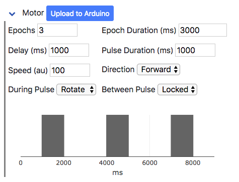

Web Interface
When the PiE sever is running, the web interface is accesible at http:/[IP]:5010 where [IP] is the IP address of the Pi.
The top row displays the Pi hostname, IP, and current date and time. When the PiE server is running, the time will be updated each second. In addition, there are links to recorded video files, PiE server logs, environmental sensors, and the full source code and documentation on Github.
The 'Start Recording' and 'Start Trial' buttons start video recording to a file. All files are saved in the /video folder. At the end of each video file recording, a trial file is also saved. Trial files are plain text files with a record of 'events' that occurred during the video recording. See the trial file readme for more information.
White and IR Switches. Will turn White and IR lights on and off. This assumes white and IR leds for the PiE server have been wired correctly to the Raspberry Pi. Both white and IR LEDs cannot be controlled when 'Configure - Auto Lights' is on.
ID and Condition. These will be pre-pended to all saved file names. Leave them blank and nothing will be added. This is useful to organize your saved files with an animal ID and condition.
Start Recording. Will start a video recording following 'Repeat Forever', 'Number of Repeats' and 'Repeat Duration'. These parameters can be set and saved in the Configure section.
Start Streaming. Will start streaming the camera to the web page. If the stream fails to start the first time, try turning it off and then on again. If it still does not work, refresh the page in the browser.
Arm. When checked, the PiE server will wait for an input trigger to start video recording. Arming is only available when 'Configure - Allow Arming' is on. Turning 'Arm' on will force 'Repeat Forever' off and 'Number of Repeats' to 1. When 'Arm' is on and an input trigger is received, video recording begins and a pre-trigger video recording will be saved. The duration of the pre-trigger video is set in 'Configure - Pre Trigger Buffer (sec)'.
Last Action. Is updated with the last action the PiE server took. This is normally updated in response to clicking interface buttons.
Configure

|
The Configure section allows parameters of the PiE server to be set. Current parameters can be saved with 'Save Defaults' and will automatically be loaded the next time the PiE server is run. Make sure you save your changes with 'Save Defaults'.
Repeat Forever. When checked, 'Start Recording' will record videos of 'Repeat Duration' over and over until 'Stop Recording' is pressed. When 'Arm' is on, this will be turned off.
Number of Repeats. The number of video files to record when 'Start Recording' is pressed. Each video file will have a duration set by 'Repeat Duration Sec)'. When 'Arm' is on, this will be set to 1.
Repeat Duration (sec). The length of each video file in seconds.
Auto Lights. When checked, the White and IR lights will be turned on and off to simulate daytime and nighttime. The white light will be on between sunrise and sunset, the IR light will be on otherwise.
Sunrise (hour) and Sunset (hour). When 'Auto Lights' is on, the White and IR lights will be turned on and off to simulate daytime and nighttime.
FPS. Specifies the frames-per-second (FPS) or recorded video. Minimum is 1 and maximum is 90.
Resolution. Specifies the resolution of recorded video.
Stream Resolution. Specifies the resolution of streaming video.
Capture Still and Still Interval (Sec). If on, still images will be captured at 'Still Interval (Sec)'. These still images can be viewed in real-time in the 'Last Still Image' section.
Pre Trigger Buffer (sec). Used for 'Armed' recording. Specifies the duration of video recording before an input trigger.
Video Annotation and Annotation Font Size. Annotate text on top of video recording. Select one of: none, date, time, date time, elapsed, or video frame.
Include Hostname. If checked, the hostname will be pre-pended to each saved video file.
Trial Number. Allows the trial number to be manually set. The trial number is always automatically incremented each time 'Start Recording' or 'Start Trial' are initiated.
Allow Arming. If on, will activate the 'Arm' interface. This assumes the PiE server has been wired to a 'trigger in' and optionally a microscope 'frame clock'.
Use Serial. If on, will activate the 'Motor' interface. This assumes a Teensy microcontroller is attached via usb.
Load. Buttons to load presets of configuration parameters. This includes 'Defaults', the last configuration saved with 'Save Defaults' as well as pre-defined configuration parameters. It is easy to set your own configuration parameters and use 'Save Defaults' exclusively.
- Defaults. Load the last configuration saved with 'Save Defaults'. These are also loaded when the PiE server is first run.
- Homecage. Auto lights on, arm off, serial off.
- Scope. Arm on, serial off.
- Treadmill. Arm on, serial on.
- User. Only for advanced users. User specified configuration file.
- Factory Defaults. Reset the PiE server to its factory default configuration.
Pins
The Pins section allows GPIO pin parameters to be specified. All parameters in the 'Pins' section will be save with 'Configure - Save Defaults'. Each pin can be independenlty enabled/disabled, please disable pins you are not using.
Input Pins. The triggerIn and frame pins are used during armed recording and their parameters need to be set to match the signals coming off your particular hardware/scope. For example, if your scope outputs a rising trigger then triggerIn should be set to Polarity rising and Pull Up/Down to down.
Output Pins. The triggerOut pin is set at the start of armed recording and can be used to trigger external devices when the PiE server is used as a slave. The whiteLED and irLED pins are turned on/off when the white and IR toggles switches are set in the main web interface.
To change 'Pin' numbers, the configuration json files need to be manually edited. These can be found in pie_app/config folder.
DHT Temperature/Humidity. This assumes you have installed the Adafruit DHT temperature sensor driver with ./install-dht. If 'enabled' is checked, temperature and humidity will be logged to a trial file during video recording at the specified 'interval (sec)'. If 'continuous' is checked, temperature and humidity readings will still be looged to a trial file during video recording but will also be continuosly logged at the specified 'interval (sec)' wether video is recording or not. The continuous log can be accessed on a separate page, named environment, using the thermometer icon. The temperature and humidity log file is in video/logs/environment.log. If you change these options and they do not take effect, try restarting the PiE server in the web interface 'Debug' section.
Motor
|  |
The Motor section allows parameters to be uploaded to a Teensy microcontroller. This is only for advanced users. Activate this section by turning on 'Configure - Use Serial'.
Debug
This section reports all parameters received from the PiE server. Use 'Restart Pie Server' to restart the PiE server. Note, this restarts the PiE server software, it does not reboot the machine.